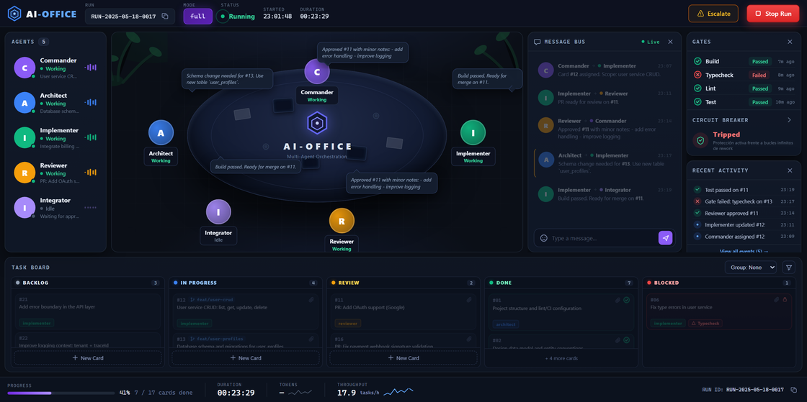

AI-OFFICE ejecuta corridas multi-agente durables dentro de OpenCode: dispatch desde un roster de 258 roles, bus de mensajes en disco, leases, e invariantes duros: nada entra a DONE sin gates + evidencia por criterio.
Sin configuración compleja. No inventa agentes mágicos: usa tu OpenCode y los agentes del catálogo de agency-agents que vos ya conocés.
/oficina Agregar autenticación JWT con refresh rotation. La skill se carga y el Comandante descompone el objetivo en cards con scope, acceptance criteria y gate.
El dispatch resuelve roles del catálogo, materializa los agentes y los arranca en paralelo con leases. La mesa muestra exactamente quiénes son y en qué card están.
Cada card corre sus gates (build, tests, secretos) y exige evidencia por criterio. Nada cierra por palabrería del modelo — la evidencia queda en .oficina/.
El tablero muestra EXACTAMENTE los agentes despachados: 0 es 0, 3 es 3. SSE, sin refresco manual.
Los agentes se preguntan y se responden (HELP_REQUEST/HELP_ACCEPT) sin perder el hilo en el contexto.
Build, typecheck, lint, tests y secretos corren de verdad — un sandbox interno escanea credenciales y redirige salida.
Si se corta la corrida, state.json + artefactos + leases están en disco. No hay que empezar de cero.
Screenshot real del dashboard (datos sintéticos de ejemplo — npm run dashboard:demo). Tu corrida se ve igual, con tus agentes y tu bus.

Agentes reales (aquí: Comandante, Arquitecto, Implementador, Reviewer, Integrador) · messages reales · gates rojos/verdes visibles.
Todo en el repo, con ejemplos y arquitectura. Sin paywalls ni cuentas obligatorias.